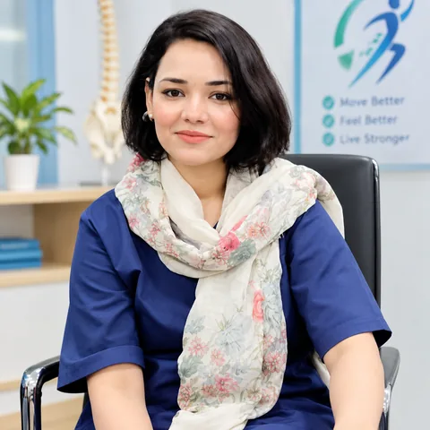

Dr. Ramsha Ramzan
Doctor of Physical Therapy (DPT)
NeuroMusculoSkeletal Physiotherapy Specialist · Bahawalpur, Punjab

Professional Profile
Dr. Ramsha Ramzan is a dedicated physiotherapist providing specialized rehabilitation and pain management services throughout Bahawalpur. As a NeuroMusculoSkeletal Expert, she focuses on restoring movement, reducing pain, and helping patients regain independence in daily life.
She currently practices at Moeen Medicare and Infertility Hospital, Satellite Town, Bahawalpur, and brings clinical experience from multiple hospitals and rehabilitation settings across the region.
Clinical Focus
- Pain Management — Evidence-based assessment and treatment of musculoskeletal pain
- Rehabilitation — Post-injury and post-surgical recovery programs
- Sports Medicine — Injury prevention and return-to-activity protocols
- Functional Restoration — Improving daily mobility and independence
- Patient Education — Empowering patients with self-management strategies
Education & Qualifications
Doctor of Physical Therapy (DPT)
Agile Institute of Rehabilitation Sciences, Bahawalpur
Comprehensive training in musculoskeletal physiotherapy, exercise prescription, manual therapy, clinical assessment, and evidence-based rehabilitation.
Professional Development
Ongoing clinical training and continuing education in evidence-based physiotherapy practices, rehabilitation techniques, and patient care management.
Background
From Bahawalnagar; lives and practices in Bahawalpur. Professional focus on serving patients across Punjab.
Clinical Experience
Dr. Ramsha has worked across multiple healthcare settings in Bahawalpur and the surrounding region:
- Moeen Medicare and Infertility Hospital — Current affiliation, Bahawalpur
- Agile Institute of Rehabilitation Sciences — Bahawalpur
- Arif Hospital — Bahawalnagar
- DHQ Hospital — Bahawalnagar
- Life Care Medical Complex (LCMC)
- Iqbal Hospital — Bahawalpur
- Bahawal Victoria Hospital — OPD Physiotherapy Department
- Health Physio Association
Experience includes outpatient physiotherapy, hospital-based rehabilitation, post-operative recovery, sports injury management, and neurological rehabilitation.
Approach to Physiotherapy
Patient-centered care focused on recovery, education, and long-term wellness
Comprehensive Assessment
Thorough evaluation of medical history, symptoms, movement patterns, and lifestyle to identify underlying causes and recovery potential.
Personalized Treatment
Customized rehabilitation programs designed around your specific condition, goals, daily activities, and recovery timeline.
Evidence-Based Practice
Treatment protocols based on current clinical research and best practices in physiotherapy and rehabilitation medicine.
Patient Education
Clear explanations of your condition and active involvement in recovery through guided exercise and self-management.
Functional Goals
Focus on restoring ability to perform daily activities, return to work, and resume hobbies and sports.
Ongoing Support
Continuous monitoring of progress, program adjustments, and follow-up for sustained recovery and wellness.
Areas of Expertise
Specialized knowledge across diverse conditions and patient needs
Musculoskeletal Pain
Assessment and treatment of back, neck, shoulder, knee, hip, and soft tissue pain.
Post-Surgical Rehabilitation
Guided recovery after orthopedic surgery with protocols coordinated with surgeons.
Sports Injury Recovery
Rehabilitation for athletes with graded return to activity and performance support.
Neurological Rehabilitation
Movement restoration and functional independence for neurological conditions.
Exercise Prescription
Customized programs for strength, flexibility, balance, and functional movement.
Manual Therapy
Hands-on techniques to reduce pain, improve mobility, and restore function.
Why Choose Dr. Ramsha
Qualified Professional
Doctor of Physical Therapy with specialized training in neuromusculoskeletal conditions and rehabilitation.
Local Expertise
Based in Bahawalpur with clinical experience across local hospitals and patient communities.
Patient-Centered Care
Individualized treatment focused on your goals, preferences, and daily life needs.
Evidence-Based Methods
Treatment grounded in current clinical research and proven rehabilitation techniques.
Clear Communication
Thorough explanations of your condition and guidance throughout recovery.
Accessible Location
Convenient clinic at Moeen Medicare and Infertility Hospital, Satellite Town, Bahawalpur.
Ready to Begin Your Recovery?
Schedule a consultation with Dr. Ramsha Ramzan in Bahawalpur. Personalized physiotherapy care awaits.